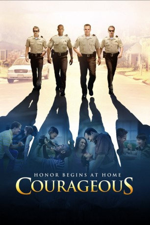

#1952 Courageous - Ein mutiger Weg
Alternativ: Courageous
 
 IMDB-Wertung: 7.0 / 10
IMDB-Wertung: 7.0 / 10  Metascore: 42
Metascore: 42 
Als Polizeibeamte kennen Adam Mitchell, Nathan Hayes und ihre Partner die Abgründe des Menschen, doch einer Herausforderung scheinen sie nicht recht gewachsen zu sein: der Vaterschaft. Während sie im Beruf ihr Bestes geben, merken sie, wie sich ihre Kinder immer mehr von ihnen entfremden. Eine persönliche Tragödie weckt in diesen Männern den Wunsch, ihren Glauben zu erneuern und ihre Kinder wieder für sich zu gewinnen. Wird es ihnen gelingen, für ihre Liebsten da zu sein und sie zu schützen?
Jahr: 2011
Dauer: 129 Minuten
FSK: 12
Land: USA Studio: TriStar PicturesTonspuren: DD5.1 - ,
Untertitel:
Auflösung: 1080p (1920x824) Größe: 8355 MB
Genre: Drama
Regisseur: Alex Kendrick
Drehbuch: Alex Kendrick, Stephen Kendrick
Soundtrack: Mark Willard
Darsteller:
- Ken Bevel als Nathan Hayes
- Alex Kendrick als Adam Mitchell
- Kevin Downes als Shane Fuller
- Rusty Martin als Dylan Mitchell
- Ben Davies als David Thomson
- Robert Amaya als Javier Martinez
- T.C. Stallings als T.J
- Rusty Martin Sr. als Mr. Tyson
- Chris Ponte als Sheriff's Deputy 20
- Renee Jewell als Victoria Mitchell
- Lauren Etchells als Emily Mitchell
- Angelita Nelson als Carmen Martinez
- Taylor Hutcherson als Jade Hayes
- Eleanor Brown als Kayla Hayes
- Matt Hardwick als Antoine
- Kaleb Bevel als Baby Hayes
- Ashley Mclearn als Lady 1 at Wreck
- Amberly Marquard als Lady 2 at Wreck
- Bryan Barnes als Ambulance Driver
- Kristi Cheshire als Ambulance Driver
- Chad Warbington als Medic 1
- Emily Zapata als Medic 2
- Chuck Mitchell als Medic 3
- Chuck Spencer als Medic 4
- Joy Spencer als Medic 5
- Ramona Higgs als Medic 6
- Daniel Wilbanks als Medic 7
- Stephen Ostrander als Muster Room Sgt.
- Mark Glow als Sheriff
- Charles Hill als Sheriff's Deputy 1
- Travius Reed als Sheriff's Deputy 2
- Logan Dorminey als Sheriff's Deputy 3
- Lonnie Mathis als Sheriff's Deputy 4
- Jason Miller als Sheriff's Deputy 5
- Chad Evans als Sheriff's Deputy 6
- Brian Phillips als Sheriff's Deputy 7
- Kevin Taylor als Sheriff's Deputy 8
- Dwan Williams als Sheriff's Deputy 9
- Ovbiye Idemundia als Sheriff's Deputy 10
- Brent Griffin als Sheriff's Deputy 11
- Garrett Grubbs als Sheriff's Deputy 12
- Dennis Hill als Sheriff's Deputy 13 / Visitation Guard
- Renata Williams als Woman at Drug House
- Ryan Canidate als Kid in Attic
- Jose Rodriguez als Jamar Holloman
- Louis Guillebeaux als Clyde Holloman
- Steve Cox als Construction Worker 1
- Roger Russell als Construction Worker 2
- Brett Kirkland als Mr. Simms
- Ellie Zapata als Isabel Martinez
Datei: X:\2011(A-F)\Courageous - Ein mutiger Weg (2011, FSK12, 1920x824).mkv seit 09.09.2015
Festplatte: HD 2010(G-Z)-2011(A-F)
 Es gibt insgesamt 86 Filme in der Gruppe '2011(A-F)'
Es gibt insgesamt 86 Filme in der Gruppe '2011(A-F)'